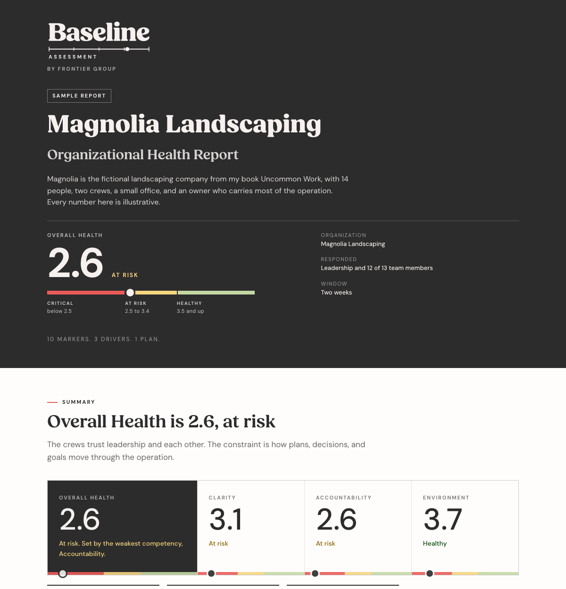
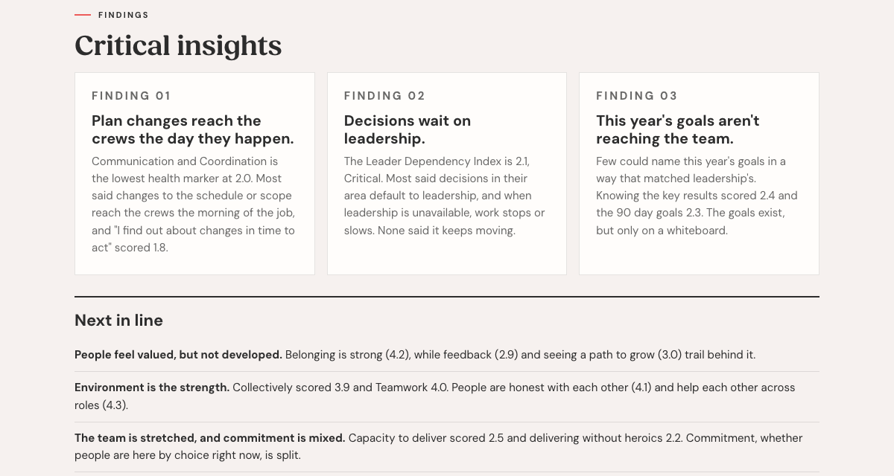
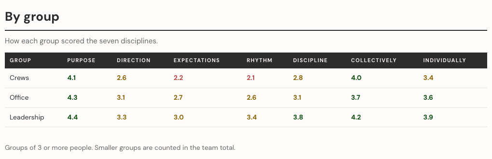
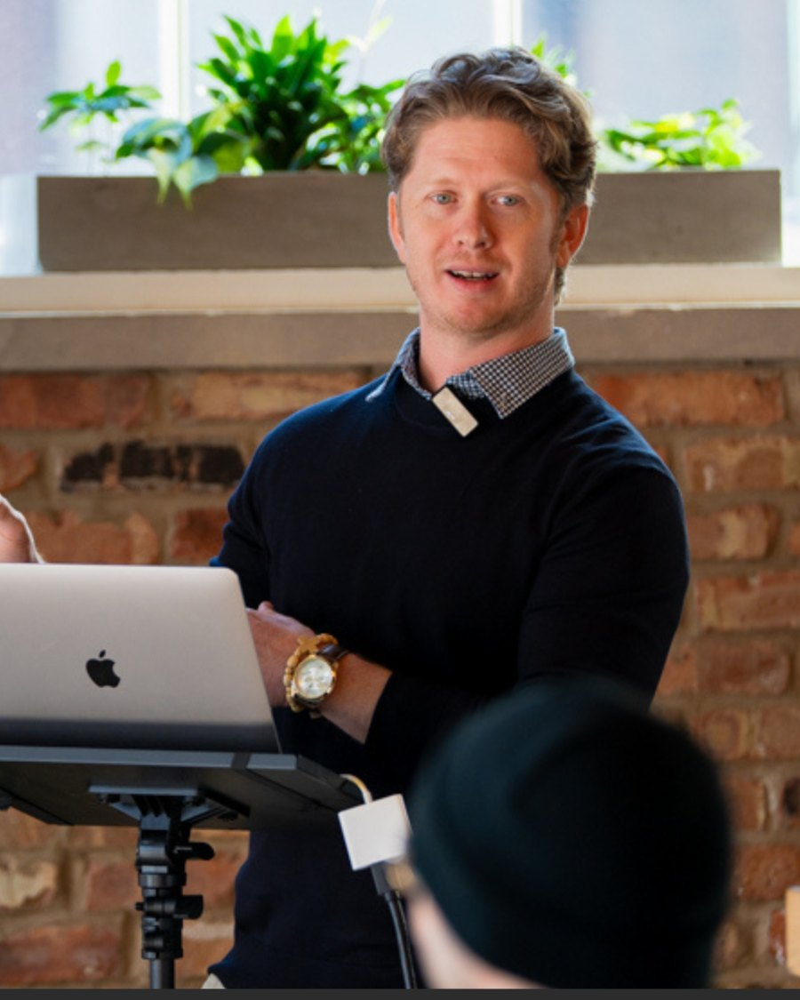

Early Adopter Promotion · 3 Spots
Know for Certain If Your Structure Is Ready to Carry Out Your Annual Plan.
The Baseline Assessment is a checkup for your whole team, then a 90 day engagement that turns the results into a plan and shows it moved.
10 markers. 3 drivers. 1 plan.
The button books a free 30 minute call.
Your Scoreboard (From a Sample Report)
2.6Overall health · at risk
Fictional organization. Yours is scored on 10 markers.
Why It Matters
A Good Plan Loses to a Poor Structure Every Time.
Most leaders are sure their team knows the plan. You can’t feel it from the inside, any more than you can feel your own blood pressure. It takes a measurement of the structure your plan has to run in: how your team decides, meets, and follows through.
If you are finishing your annual plan now, this is the moment to check the structure it has to run in.
managers could name their organization’s top three priorities.
A study of 11,000 managers. Sull and Homkes, Harvard Business Review, 2015.
of nonprofit CEOs call their own burnout very much a concern, up from just under 30% a year earlier.
Center for Effective Philanthropy, State of Nonprofits 2026.
Where You Are Now
- Every decision, every fire, every call still runs through you.
- The plan lives on paper. The team nods, then the work drifts.
- You can feel something is off, but you can’t point to what.
- Your best people see it first, and they leave first.
Where You Are at Day 90
- A team that knows the plan and runs it without waiting on you.
- Decisions made on facts, not on a hunch.
- You know your three drivers and which one to fix first.
- Proof it moved: a day 90 pulse you can show your board.
Your team and your mission were entrusted to you. Knowing where they really stand is part of stewarding them well.
“I’ve watched him scale an organization in an impressively short amount of time … and unclog inefficient and broken systems with the kind of wisdom and strategic thinking that only comes with experience and intuition developed over time.”Mattanah DeWitt, Director of Strategic Communications
How It Works
Three Steps, and 20 to 25 Minutes of Your Team’s Time.
-
Your Team Answers
Each person takes 20 to 25 minutes, on their own, over a two week window.
-
I Analyze Every Answer
I review every finding myself before anything reaches you.
“As a master of organizational development, he listens intently, diagnoses challenges with precision, and delivers actionable insights that inspire confidence.”
Luke B., Ph.D., Nonprofit Executive -
You Get the Report, the Plan, and the Follow Through
A walkthrough of your results, live or recorded. Then the 90 days begin.
What You Get
The Report and the Plan Behind It.
Most assessments stop at a score. The Baseline goes three layers down, so you leave with a plan, not just a number.
-
Where You Stand
The 10 Markers
Ten health markers that the leading organizational health research has in common, scored one by one.
See the 10 Markers
- Shared Direction
- Purpose and Meaning
- Role Clarity and Decision Rights
- Execution and Accountability
- Communication and Coordination
- Trust and Psychological Safety
- Teamwork and Shared Results
- Recognition and Growth
- Leadership
- Adaptability and External Orientation
-
Why You’re There
The 3 Drivers
The 86 questions aren’t a long list. Each one sits inside a competency that drives healthy organizations.
ClarityDoes everyone know why we exist and what’s expected?AccountabilityDo we meet on a rhythm that keeps us on track?EnvironmentIs there real trust, and does each person feel heard? -
What to Do Next
The 1 Plan
The two or three most strategic moves to improve your health in the next 90 days.


Worried It Will Be Another Report on a Shelf?
It ends in a plan with owners and dates, and the 90 days that follow measure whether anyone acted on it.
“The systems and planning rhythm we put in place completely changed how we operate. The team’s aligned, consistent, and I’m getting fewer calls.”Bret Stout, President/CEO, Eagle’s Wings Athletics
Early Adopter Promotion · 3 Spots
Start the Year Knowing for Certain.
The Baseline Assessment, the plan, and the follow through that shows it moved, in one 90 day engagement.
Guarantee. If your day 90 pulse shows no movement on at least one of your chosen priorities or Outcomes, measured with the same questions you answered in your Baseline, you receive up to 5 more coaching hours at no charge. Results vary. Results are reported only in combination; the law may require action if a response indicates harm to a person.
Why It’s Different
What Makes the Baseline Different.
How the Baseline compares with typical alternatives.
Comparison based on public information reviewed in November 2026.
“Jeremy’s approach transformed our team from a group of individuals into a cohesive, heart-driven machine.”Tiffany W., Nonprofit Leader
Two things every respondent is told up front. If an answer shows harm to a person, abuse, or illegal activity, the law may require action. And on a very small team, combined scores can sometimes hint at how someone answered.
Made to Fit
Built for Your Organization.
Your Baseline, not off the shelf.
Your Words
Your sector’s language throughout, so a church hears ministry and a nonprofit hears mission.
Your Name on It
Your organization’s name on what your team fills out and on the report you get back.
Up to 5 Questions of Your Own
Added at the end and reported separately as Your Questions. The 86 core questions stay fixed, so day 90 and month 6 still compare. I coach you to keep yours tight.
Your Departments, With Results by Team
List your departments. Each person says which one they are on, and your results come back by team. A group of fewer than 3 people is folded into the team total, so no one is exposed.


Who Is Behind It
The Person Reading Every Finding.
I joined a faith based nonprofit as the second hire. The founding team was three, and we grew to 50. The Baseline comes from what we learned the hard way about what keeps a growing team healthy, and I read every finding myself.
“Jeremy is a right Good Will Hunting when it comes to organizational leadership!”Harrison K., Author and Former Colleague
Before You Start
Questions Before You Start.
What Does Early Adopter Mean?
Three organizations get the Baseline 90 at the early adopter price. Three is how many I can serve well, so the spots are first come.
My Team Is Small. Does This Still Fit?
Yes. It’s built for small teams where most decisions still find their way to the leader.
What’s the Snapshot?
A free taste of the Baseline, a short version you take on your own before you bring your team in. You see your results on screen right away and get a copy by email.
What Happens After the Snapshot?
Your results are yours whether or not we ever talk. If you want help reading them, you can book a time with me at the end.
Ready to Know Where Your Team Stands?
3 spots, first come. Sign by Dec 31, 2026.
Try the Free Snapshot First.
Take it in about 4 minutes. You’ll see your first readings on screen, and you can decide whether a check of your whole team is worth it.
Step 1 of 3
Tell Me About Your Work.
These help me read your results in your world.
I use your email to send your results and to follow up personally. I never sell or share it. Privacy
What’s in Place Today?
Answer what you know to be true. “Not sure” is a useful answer.